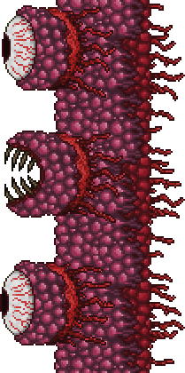

지옥의 보스로, 하드모드로 진입을 하기위해 격파해야하는 보스이다.
특이사항으로 모든 보스중 크기가 제일 크다. Y축 전체를 잡아먹는다.
|  월 오브 플래시 |
|||
| 클래식 | 전문가 | 마스터 | |
|---|---|---|---|
| 체력 | 8000 | 11200 | 14280 |
| 방어력 | 12 | 18 | |
| 공격력 | 50 | 105 | 225 |
지옥에서 가이드 부두인형 또는 가이드를 용암속에 빠트려 소환이 가능하다
보스전 방식이 다른 보스들과 차별화가 되는데, 한쪽방향으로 계속 직진해온다. 즉 플레이어는 계속 한쪽으로 이동하면서 싸워야 하는것.
입에서는 헝그리라는 이름의 잡몹의 소환되며, 눈에서는 레이저를 발사한다. 헝그리를 잡으면 하트르를 줌으로 체력이 부족하다면 열심히 잡도록 하자. 눈이 입보다 방어력이 적으므로 눈을 위주로 공격하는 것이 효과적.
월 오브 플래시를 격파하면 월드가 하드모드로 돌입하게 된다.